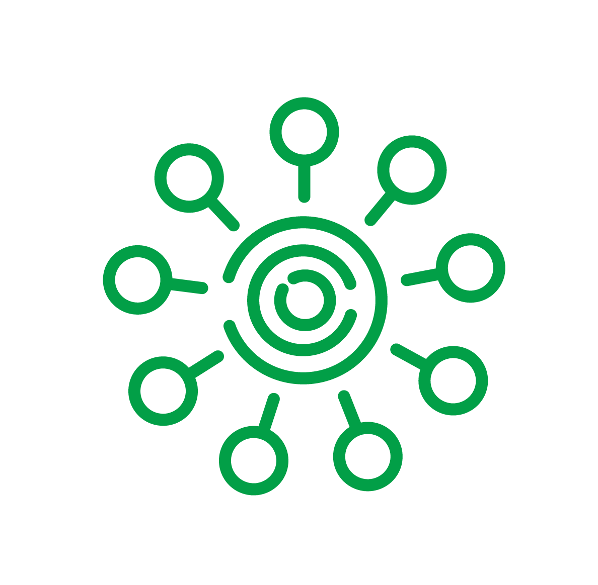

<app-spinner filterBy="news/all"></app-spinner>

<ng-container *ngIf="news">

  <div class="container-fluid mb-md-5">
    <div class="text-right" >
      <button [matMenuTriggerFor]="editNews" mat-icon-button  matTooltip="Edit updates"
              aria-label="Button that displays a tooltip when focused or hovered over">
        <mat-icon>add</mat-icon>
      </button>
      <mat-menu #editNews="matMenu" xPosition="before">
        <button mat-menu-item (click)="addNews()">Добавить Новость</button>
        <button mat-menu-item (click)="configNews(true)">Удалить Новость</button>
        <button mat-menu-item (click)="configNews(false)">Редактировать Новость</button>
      </mat-menu>
    </div>

    <div class="row mt-md-5 justify-content-center ">
      <div class="row justify-content-center">
        <div class="col-lg-10 p-0 col-11 mb-4 mt-4  pt-2 ">
          <div class="row justify-content-start">
            <div *ngFor="let News of news"class="col-md-3 grid-margin stretch-card" >

              <div class="comp card m-1  border project-card stretch-card rounded">

                <div class="card-body  p-0 h-100  rounded">
                  <div class="text-right" style="height: 10%; background-color: #f3f3f3">
                    <button  *ngIf="DeleteNews" matSuffix mat-icon-button  matTooltip="Удалить"
                             aria-label="Button that displays a tooltip when focused or hovered over" (click)="deleteNews(News)">
                      <mat-icon>remove_circle_outline</mat-icon>
                    </button>
                    <button  *ngIf="EditNews" matSuffix mat-icon-button  matTooltip="Изменить"
                             aria-label="Button that displays a tooltip when focused or hovered over" (click)="updateNews(News)">
                      <mat-icon>edit</mat-icon>
                    </button>
                  </div>
                  <div class="paddingDiv text-center" style="height: 57%">
                    <ng-container *ngIf="News.images">

                      
                    </ng-container>
                    

                  </div>

                  <div class="overflow-auto  stretch-card" style="height: 20%">
                    <div class="media-body align-self-center text-md-left text-center text-sm-center p-2">
                      <p class="card-title  m-0 text-center"><a [routerLink]="['/newsDetail',News.id]">{{News.title}}</a></p>
                    </div>
                  </div>
                  <div class="pb-2 pl-2 pr-2" style="height: 13%">
                    <div class="row" style="height: 10%">
                      <div class="col d-flex ">
                        <button mat-icon-button aria-label="Example icon button with an eye icon">
                          <mat-icon>remove_red_eye</mat-icon>

                          <span>{{News.views}}</span>
                        </button>
                      </div>
                      <div class="col d-flex ">
                        <button mat-icon-button aria-label="Example icon button with a heart icon" class="ml-auto">
                          <mat-icon>favorite</mat-icon>

                          <span>{{News.likes.length}}</span>
                        </button>

                      </div>
                    </div>

                  </div>


                </div>

              </div>


            </div>

          </div>
          <div class="text-right">
            <ngb-pagination class="d-flex justify-content-end" (pageChange)="changePage($event)" [ellipses]="true"  [collectionSize]="totalNewsCount" maxSize="5" [(page)]="page" [pageSize]="perPageCount" [rotate]="true" [boundaryLinks]="true"></ngb-pagination>

          </div>
        </div>
      </div>


    </div>

  </div>
</ng-container>
